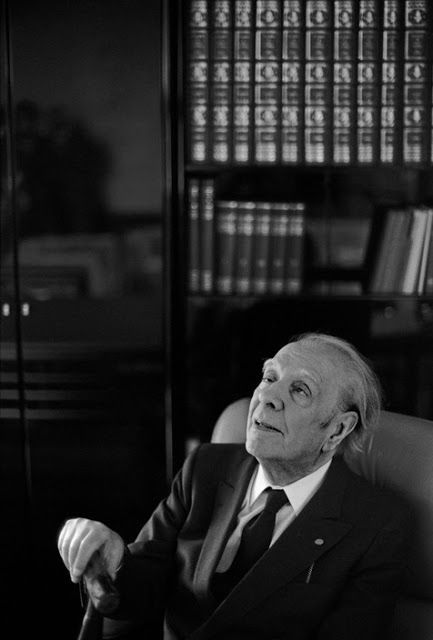

Jorge Luis Borges 24 August 1899 – 14 June 1986 was an
Argentine short-story writer, essayist, poet and
translator, and a key figure in Spanish-language and
universal literature.
Jorge Francisco Isidoro Luis Borges Acevedo was born
into an educated middle-class family on 24 August 1899.
Jorge Luis Borges was taught at home until the age of 11,
was bilingual in Spanish and English, reading
Shakespeare in the latter at the age of twelve. The
family lived in a large house with an English library of
over one thousand volumes;
Death:
He died of liver cancer on 14 June 1986, aged 86, in
Geneva. His burial was preceded by an ecumenical
service at the Protestant Cathédrale de Saint Pierre on 18
June.
Borges was a man who had unceasingly searched for the
right word, the term that could sum up the whole, the
final meaning of things.